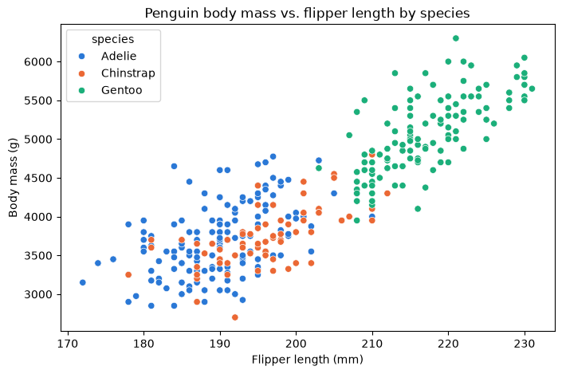
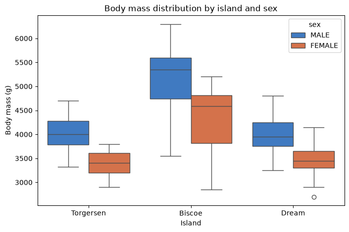

Pre-class: Activity 1 — Readiness check¶
A short diagnostic that checks your tools and your starting point: run a small exploratory analysis of the Palmer Penguins data in Jupyter, build two quick views of the Sample – Superstore data in Tableau, answer five questions and submit one combined PDF.
Adapted from the DATA 300 syllabus, Activity 1 (Self-Assessment and Readiness Check), for local Jupyter without internet access.
| Graded | Yes: 4% of the course grade |
| Outcomes | CLO 1, 2, 3 and 4 |
| Tools | JupyterLab (Anaconda) and Tableau Desktop |
| You submit | One PDF, YourLastName_DATA300_Week1_Readiness.pdf, on GAP (Moodle) |
| Deadline | Monday 9 November, 23:59 China Standard Time, before the course starts (see the schedule) |
What you will do¶
| Part | Tool | You produce |
|---|---|---|
| A. Jupyter | This notebook | Summary tables, two charts, answers to questions 1–3, and a PDF of the notebook |
| B. Tableau | Tableau Desktop | Two worksheets, answers to questions 4–5, and a PDF of the workbook |
| C. Submission | A word processor and a PDF tool | Your answers as a PDF, then all three PDFs combined into one file |
You do not need to write code from scratch: the code below works as given. Your job is to run it, read the output and answer the questions.
Before you start¶
- Keep this notebook in the course folder, next to the
datafolder. - Save your own copy under the name the course uses: File → Save Notebook As… and type
YourLastName_Data300_Self_Check.ipynb(with your real last name). Work in that copy.
Part A: Exploratory analysis in Jupyter¶
The Palmer Penguins data records measurements of adult penguins of three species (Adelie, Chinstrap and Gentoo) on three islands near Palmer Station, Antarctica. One row is one penguin.
A1. Import the libraries¶
Anaconda already includes these, so there is nothing to install. Run the cell.
import matplotlib.pyplot as plt
import pandas as pd
import seaborn as sns
print("Libraries loaded: pandas", pd.__version__, "| seaborn", sns.__version__)
Libraries loaded: pandas 2.2.3 | seaborn 0.13.2
A2. Load the data¶
The file is in the data folder, so it loads without internet.
df = pd.read_csv("data/penguins.csv")
print("Rows and columns:", df.shape)
Rows and columns: (344, 7)
A3. First rows and summary statistics¶
head() shows the first five penguins. describe() summarises every numeric column. Read the count row: a count lower than the number of rows means some values are missing (not recorded).
print("--- First 5 rows of the dataset ---")
display(df.head())
print("\n--- Summary statistics ---")
display(df.describe())
--- First 5 rows of the dataset ---
| species | island | bill_length_mm | bill_depth_mm | flipper_length_mm | body_mass_g | sex | |
|---|---|---|---|---|---|---|---|
| 0 | Adelie | Torgersen | 39.1 | 18.7 | 181.0 | 3750.0 | MALE |
| 1 | Adelie | Torgersen | 39.5 | 17.4 | 186.0 | 3800.0 | FEMALE |
| 2 | Adelie | Torgersen | 40.3 | 18.0 | 195.0 | 3250.0 | FEMALE |
| 3 | Adelie | Torgersen | NaN | NaN | NaN | NaN | NaN |
| 4 | Adelie | Torgersen | 36.7 | 19.3 | 193.0 | 3450.0 | FEMALE |
--- Summary statistics ---
| bill_length_mm | bill_depth_mm | flipper_length_mm | body_mass_g | |
|---|---|---|---|---|
| count | 342.000000 | 342.000000 | 342.000000 | 342.000000 |
| mean | 43.921930 | 17.151170 | 200.915205 | 4201.754386 |
| std | 5.459584 | 1.974793 | 14.061714 | 801.954536 |
| min | 32.100000 | 13.100000 | 172.000000 | 2700.000000 |
| 25% | 39.225000 | 15.600000 | 190.000000 | 3550.000000 |
| 50% | 44.450000 | 17.300000 | 197.000000 | 4050.000000 |
| 75% | 48.500000 | 18.700000 | 213.000000 | 4750.000000 |
| max | 59.600000 | 21.500000 | 231.000000 | 6300.000000 |
A4. Chart 1: flipper length against body mass, by species¶
A scatter plot with one dot per penguin. Colour shows the species.
species_colours = {"Adelie": "#2a78d6", "Chinstrap": "#eb6834", "Gentoo": "#1baf7a"}
plt.figure(figsize=(8, 5))
sns.scatterplot(
data=df,
x="flipper_length_mm",
y="body_mass_g",
hue="species",
palette=species_colours,
)
plt.title("Penguin body mass vs. flipper length by species")
plt.xlabel("Flipper length (mm)")
plt.ylabel("Body mass (g)")
plt.show()

A5. Chart 2: body mass by island and sex¶
A box plot shows how values are spread within each group: the box covers the middle half of the penguins, the line inside it is the median, and the whiskers and dots show the rest.
sex_colours = {"MALE": "#2a78d6", "FEMALE": "#eb6834"}
plt.figure(figsize=(8, 5))
sns.boxplot(
data=df,
x="island",
y="body_mass_g",
hue="sex",
palette=sex_colours,
)
plt.title("Body mass distribution by island and sex")
plt.xlabel("Island")
plt.ylabel("Body mass (g)")
plt.show()

A6. Answer questions 1–3¶
Use the outputs above to answer. Double-click the cell below, replace each Your answer with one or two sentences, then press Shift + Enter. Copy the same answers into your answers document in Part C.
| # | Topic | Question |
|---|---|---|
| 1 | Descriptive statistics | In the summary statistics table, what is the mean body mass (body_mass_g) of the penguins, in grams? |
| 2 | Relationship between two variables | In Chart 1, what happens to body mass as flipper length increases? Describe the general pattern. |
| 3 | Comparing groups | In Chart 1, which species (Adelie, Chinstrap or Gentoo) forms the cluster with the highest body mass? |
My answers to questions 1–3
1. Mean body mass: Your answer
2. Pattern between flipper length and body mass: Your answer
3. Species with the heaviest cluster: Your answer
A7. Export this notebook to PDF¶
- Choose Kernel → Restart Kernel and Run All Cells. Check that both tables, both charts and your answers are visible.
- Choose File → Print (or Ctrl + P / Cmd + P).
- In the print window, set the destination to Save as PDF. Under More settings, tick Background graphics so the chart colours are kept.
- Save the file as
Data300_Self_Check_Results_LastName.pdf, with your last name. This is your Jupyter results PDF.
If the PDF looks wrong
Charts missing usually means the notebook was not run before printing: run all cells and print again. Very wide tables may be cut at the page edge; that is acceptable here.
Part B: Tableau readiness¶
Tableau is a widely used business intelligence (BI) tool. These steps are done in Tableau Desktop, not in this notebook. Tick each step as you go.
B1. Get and activate Tableau¶
- Your facilitator will tell you whether Tableau is already installed on the lab PCs.
- On your own laptop: request a free student licence from Tableau's academic programme for students, using your university email address. You may need to confirm you are a student (for example with your student ID). The licence key arrives by email.
- Download Tableau Desktop, install it, and activate it with the key.
No licence yet?
Verification can take a few days. Tell your facilitator: you can use Tableau Public Desktop for practice, or a lab PC, and complete Part B there.
B2. Open the built-in data¶
- Start Tableau Desktop.
- On the start page, under Saved Data Sources, click Sample – Superstore. It contains made-up sales data for a retail company. A blank worksheet, Sheet 1, opens.
B3. Worksheet 1: Sales by Category¶
- In the Data pane on the left, drag Category onto the Rows shelf.
- Drag Sales onto the Columns shelf. Tableau draws a horizontal bar chart: one bar per category, its length the total sales.
- Optional: click Sort Descending on the toolbar so the longest bar is on top.
- Double-click the sheet tab and rename it Sales by Category.
B4. Worksheet 2: Profit map¶
- Click the New Worksheet icon at the bottom of the window (the tab with a plus sign).
- In the Data pane, double-click State/Province (in older versions of Tableau it is called State). Tableau draws a map with a dot for each state.
- Drag Profit onto Color on the Marks card. States are now coloured by total profit: blue for a profit, orange for a loss.
- Rename the sheet Profit Map.
B5. Answer questions 4–5¶
Write these in your answers document (Part C).
| # | Question |
|---|---|
| 4 | From worksheet 1 (Sales by Category), which product category has the highest total sales? |
| 5 | From worksheet 2 (Profit Map), name at least one US state that is making a loss (coloured orange). |
B6. Save the Tableau output as PDF¶
- In Tableau, choose File → Print to PDF.
- Select Entire Workbook so both worksheets are included.
- Click OK and save the file as
Tableau_Results.pdf.
Using Tableau Public?
Tableau Public Desktop may not offer Print to PDF. Take a screenshot of each worksheet, paste both into a document, and save that as
Tableau_Results.pdf.
Part C: Submission¶
C1. Your answers as a PDF¶
- In Word (or any word processor), write your answers to all five questions, numbered 1–5. Put your name and student ID at the top.
- Save or export it as
Answers.pdf.
C2. Combine the three PDFs¶
Combine these three files, in this order, into one PDF:
Answers.pdf- Your Jupyter results PDF,
Data300_Self_Check_Results_LastName.pdf Tableau_Results.pdf
Use any PDF tool you have: for example Preview on macOS (drag the pages of one PDF into the sidebar of another), Adobe Acrobat, or a tool your facilitator recommends. Online PDF tools may be slow or blocked; ask your facilitator if you cannot combine the files.
Name the combined file YourLastName_DATA300_Week1_Readiness.pdf.
C3. Upload¶
Upload the single combined PDF to the Activity 1 submission on GAP (Moodle).
Checklist before you upload¶
- The notebook was restarted and run all before printing; both tables and both charts appear in the Jupyter PDF.
- Questions 1–3 are answered in the notebook and in
Answers.pdf. - Both Tableau worksheets appear in
Tableau_Results.pdf. - Questions 4–5 are answered in
Answers.pdf. - The three PDFs are combined in the order Answers, Jupyter, Tableau.
- The file is named
YourLastName_DATA300_Week1_Readiness.pdfand uploaded to GAP (Moodle).
How it is marked¶
The activity is marked with the course's activity rubric: four criteria for CLOs 1–4 (20 points each), plus professional formatting (10 points) and clear academic writing (10 points). In practice this means: complete, correct answers written in clear full sentences; all required outputs present and readable; and the files named and combined as asked.
Stuck?
Setup problems are exactly what this activity is meant to uncover. If a cell will not run or Tableau will not install, take a screenshot and contact your facilitator through the pre-class online support, before the deadline.